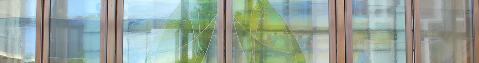

| 牧職小組 |
| 主任司鐸： |
施永泰神父 (Rev. Giorgio Pasini , PIME, P.P.) |
| 助理司鐸： |
韋沐恩神父 (Rev. Mechelle Reginio, CICM, Ass. P.P.) |
| 助理司鐸： |
林勝文神父 (Rev. Ephraim Lam Shing Man, Ass. P.P.) |
| 助理司鐸： |
和家樂神父 (Rev. Mechelle T. Reginio CICM, Ass. P.P.) |
| 執事： |
邵偉亮執事 (Rev. Deacon Paul Siu Wai Leung) |
| 牧職修女： |
莫慧宜修女 (Sr. Maria Salome Moe F.M.A., P.S.) |
| 傳道員： |
李燕屏女士 (Ms. Lee Yin Pheng (Catechist)) |
| |
|
|
| 聖安德肋堂感恩祭時間表及一般資料 |
| 主日感恩祭： |
上午七時半，九時，十時半，十二時，下午六時 |
| 提前主日感恩祭： |
星期六下午六時 |
| 平日感恩祭： |
星期一至五上午七時三十分 |
| 地址： |
九龍將軍澳常寧路11號
No.11 Sheung Ning Road, Tseung Kwan O, Kowloon
|
| 電話： |
(852) 2623 5576, 2623 6709, 2623 6710 |
| 傳真： |
(852）2701 6736 |
| 電郵： |
office@tkoacc.org.hk |
| |
|
|
最後更新日期：2013年6月21日 |
|
|